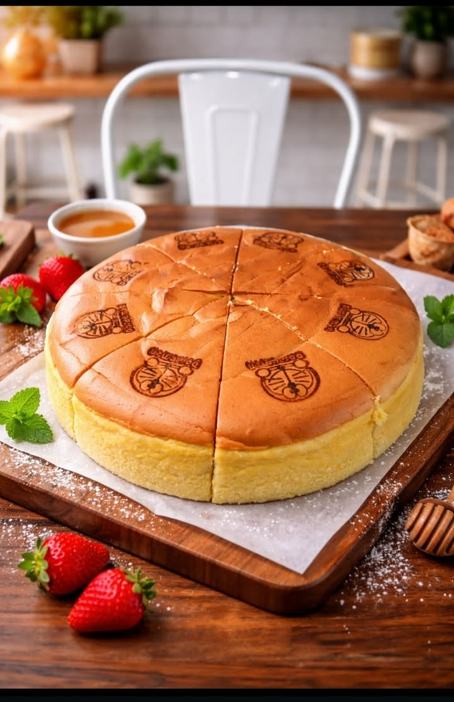

Cake
Home

This cake is soft, moist, and delicious. It is made with simple
ingredients and is perfect for a sweet dessert.
Ingredients
- Butter - 250g/li>
- Sugar - 250g
- Egg -8
- Flour - 250g
- Baking powder - 8g
- Salt - 1.5g
- Preheat your oven to 180°C (350°F). Grease your baking pan and line it with parchment paper
- Sift together the flour, baking powder, and a pinch of salt in a separate bowl.
- Beat the softened butter and sugar together with an electric mixer until the mixture is pale, light, and fluffy.
- Add the eggs one at a time, beating well after each addition. Then mix in the vanilla extract or essence.
- Alternate adding portions of the dry flour mixture and the milk to the wet ingredients, folding gently until just combined.
- Pour the batter into your prepared pan and bake for 35 to 50 minutes until a skewer inserted in the center comes out clean. Let it cool before serving.